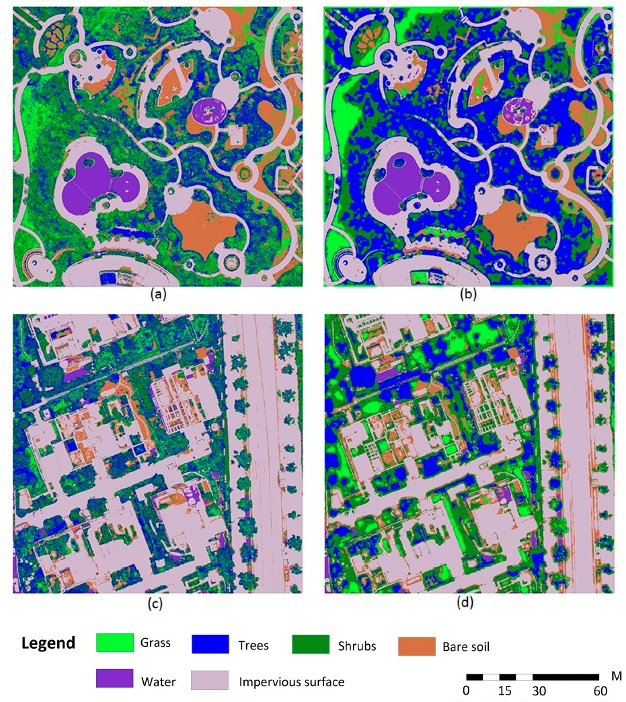

6 Week 6 - Classification 1
6.1 Summary
This week we were introduced to a variety of concepts regarding classification. Many researchers have recognised that classified data can be used for identifying and measuring urban expansion, green spaces, air pollution, land surface tempertaure and much more. In this section I will focus on summarising CART and random forests, which are types of machine learning algorithms that can be applied to uncover patterns and solve regression and or classification errors.
6.1.1 Classification and Regression Trees (CART)
Classification trees allow you to classify data into two or more categories, whilst regression trees predict dependent variables that are continuous. The regression tree often has to subset data into smaller sections if it does not fit into a linear regression model. This is often quantified with the Gini impurity weighting using the following: 1-(probability of yes)^2-(probability of no)^2. Once this calculation is made, it it the lowest impurity that sits at the top of the decision making tree, (aka the root). The sum of the square residuals (SSR) is taken into account and checked against different thresholds. In order to prevent overfitting the model, a minimum no. of observations can be set.

Image source: Medium. (2021)
6.1.2 Overfitting
There are two ways in which overfitting can be prevented:
limit the no. of trees that are grown, this would require the minimum no. of pixels within a leaf to be set to 20.
Weakest leaf pruning - where a leaf is removed as the SSR increases

Image source: Analyst Prep. (2021)
6.1.3 Random Forests
Random forests are able to grow multiple classification trees and often generate decision trees from a random no. of variables. Bootstrapping (aka re-sampling by replacement) data is used to make a decision. In an out-of-bag sample (OOB), 70% of data is trained whilst 30% remains in bootstrap. The image below shows an example of how this process is carried out.

Image source: Medium. (2020)
6.1.4 Definitions
Bias - “the difference between predicted value and true value”
Variance - “the variability of a model for a given point”
6.2 Applications
Belgiu & Dragut (2016) have sought to understand how random forests can be applied in remote sensing. They recognise it as a reliable method that can be applied as this classifier is able to successfully “select and rank those variables with the greatest ability to discriminate between the target classes” (pg 24), which enables to speed up an otherwise time-consuming process. They also acknowlegded that CART is also popular in remote sensing due to the lack of assumptions made around frequency distribution. Additionally Pal (2005) highlights several benefits of using random forest classification such as handling categorical data, even if values may be missing from the dataset, alongside being able to “detect outliers by using proximity analysis” (pg 221).
Feng et al. (2015) conducted a study to map out vegetation in urban areas in China. They used random forest for image classification in the aims of achieving high accuracy levels. They set random predictor variables which where divided into training samples, and 1/3 of the the samples were OOB. This was done to “cross-validate and evaluate classification accuracy” (pg 1082). Based on the use of random forest, they were later able to perform texture analysis based on the classified results of land cover types, which can be seen in the image below.

Image source: Feng et al. (2015) pg 1084
6.3 Reflection
I found this weeks lecture quite overwhelming as there where several components covered. Despite this, it is still interesting to learn how machine learning algorithms can be applied in remote sensing. I was not aware of these processes prior to this lecture and was surprised by the extent of linear regression that is involved. It is clear that these machine learning techniques are beneficial to remote sensing processing as it is able to generate and classify scenarios which helps researchers identify which classes are best based on the ranking output that the random forest classifcation produces. It was interesting to see in the example above how implementing such techniques prove to be relevant in analysing urban vegetation, as this links back to the policy I investigated in week 4, and this could potentially be applied in the detection of green roofs, as it would look into similar features that Feng et al. (2015) had studied. Another thing that I found intriguing was to see how linear regression comes into play when measuring a model for overfitting. Gaining insight on how the data fits seems to provide an easy way to interpret the suitability of the classification that was previously conducted, which helps to direct the researchers to different techniques which can ensure its accuracy.
6.4 References
Analyst Prep (2021) https://analystprep.com/study-notes/cfa-level-2/quantitative-method/overfitting-methods-addressing/
Belgiu, M. & Dragut, L. (2016) Random forest in remote sensing, a review of applications and future direction. ISPRS Journal of Photogrammetry and Remote Sensing. 114, pg 24-31. [Online] Available via: https://www.sciencedirect.com/science/article/abs/pii/S0924271616000265
Feng, Q. et al. (2015) UAV Remote Sensing for Urban Vegetation Mapping using Random Forest and Texture Analysis. Remote Sensing. 7(1), pg. 1074-1094. [Online] Available via: https://www.mdpi.com/2072-4292/7/1/1074
Medium (2020) https://pub.towardsai.net/use-of-decision-trees-and-random-forest-in-machine-learning-1e35e737b638
Medium (2021) https://medium.com/geekculture/decision-trees-with-cart-algorithm-7e179acee8ff
Pal, M. (2005) Random forest classifier for remote sensing classification. International Journal of Remote Sensing. 26(1), pg 217-222. [Online] Available via: https://www.tandfonline.com/doi/full/10.1080/01431160412331269698?casa_token=HgG9sL41P4QAAAAA%3A_NlexnqhGl6ZHvYeMiOdrM9ZLlJG9HdaGCuKUfo6fGlGZou4ZrAJzhEQtsS5uEsRJ5p5mMhm3y4